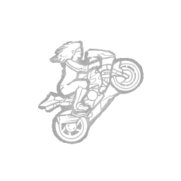

逃脱 Breakout
所属：木村唯（逃生者）
| 等级 | 档位 1 | 档位 2 | 档位 3 |
|---|---|---|---|
| 数值 | 6 4 | 8 | 10 |
描述
当有人陷入困境时，你会火力全开，激励他们克服一切障碍。处于扛着其他逃生者的杀手5米范围内时，获得以下效果：赋予你6/8/10%的急速状态效果。被扛起的逃生者挣扎速度提升25%。逃生者一次只能受到一个突围效果的影响。"来吧，我们要硬生生杀出一条血路。"——木村结衣

所属：木村唯（逃生者）
| 等级 | 档位 1 | 档位 2 | 档位 3 |
|---|---|---|---|
| 数值 | 6 4 | 8 | 10 |
当有人陷入困境时，你会火力全开，激励他们克服一切障碍。处于扛着其他逃生者的杀手5米范围内时，获得以下效果：赋予你6/8/10%的急速状态效果。被扛起的逃生者挣扎速度提升25%。逃生者一次只能受到一个突围效果的影响。"来吧，我们要硬生生杀出一条血路。"——木村结衣